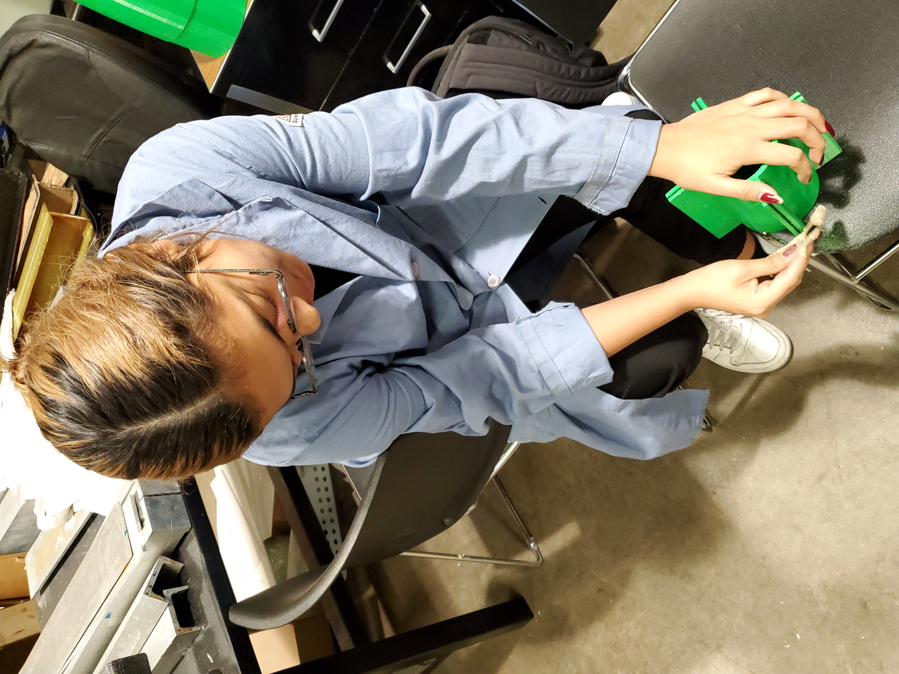
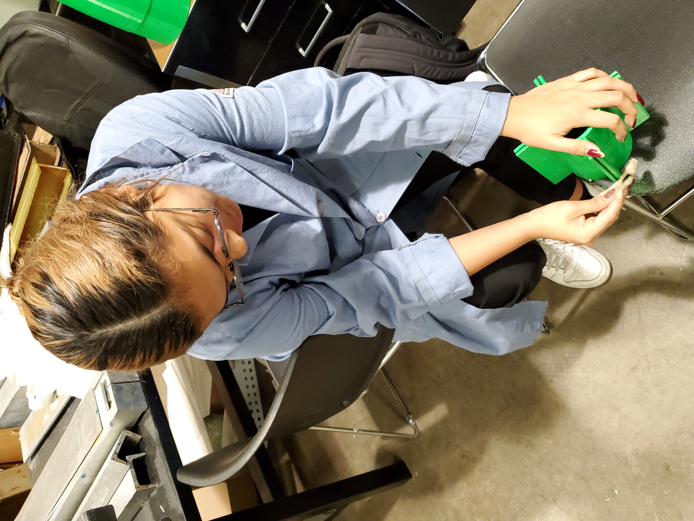
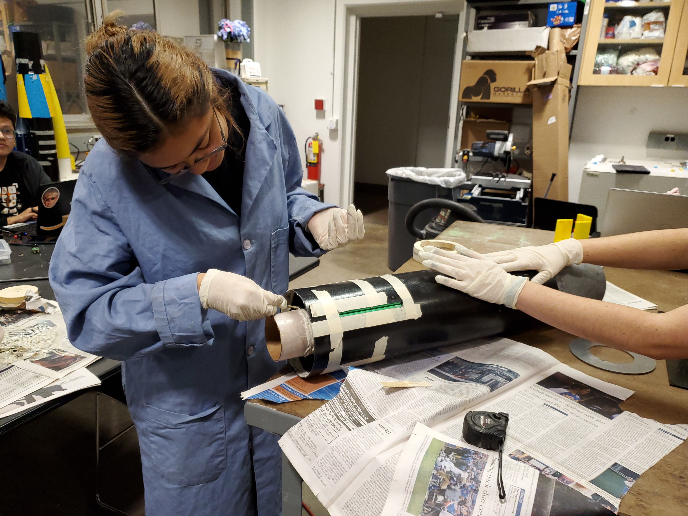
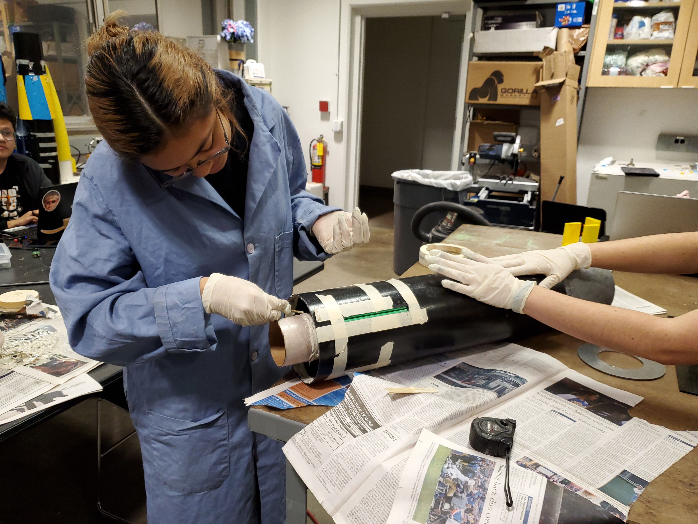
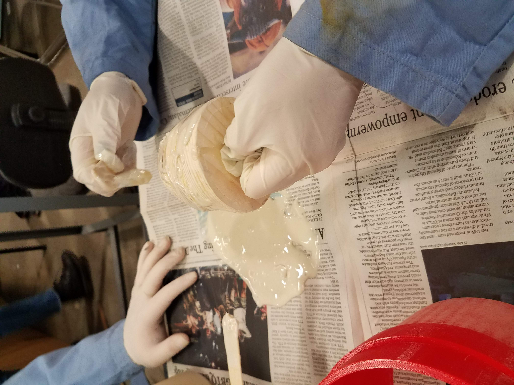
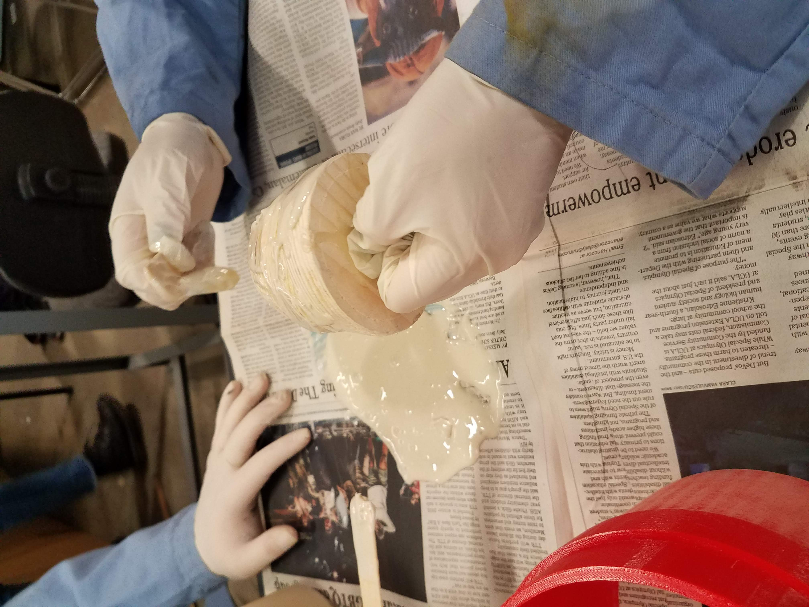

In the 2020-2021 school year, Bearospace @ UCLA applied and was accepted to NASA Student Launch (formerly known as University Student Launch Initiative, or USLI). USLI is a research-based, competitive, high-powered rocketry competition focused primarily on developing unique payload systems. It strives to provide relevant, cost-effective research and development of current objectives/problems faced by the Artemis program.
This year, the competition was divided into two divisions due to COVID-19: a Launch division and a Design Only division. Due to restrictions at UCLA and student members taking classes remotely, Bearospace participated in the Design Only division. Please look at the Context & Struggles section to understand the current leads' objectives for this year.
This year's unique payload criteria was to design a lander capable of being launched in a high power rocket, deployed from the launch vehicle during its descent phase, landing safely, taking a 360-degree panoramic photo, and transmitting the picture to the team. Important high-level payload design requirements are presented below:
Additional general, vehicle, recovery, and safety requirements are outlined in the manual but are not as applicable to my role so they will not be discussed.
Grading for the Design Only division was based on major milestone documents and deliverables, in addition to a Payload Modification Vehicle Redesign (PMVR) unique to the Design Only division. Milestone deliverables (first 4 bullet points) include a report and a presentation. No milestone launches were required due to COVID-19.
The grading breakdown adds up to 90% instead of 100% because the Launch Division includes an additional 10% for target altitude accuracy.
insert_drive_fileOpen Bearospace's 2020-2021 score sheetBearospace @ UCLA is proud to say it placed 2nd in the Design Only division and was awarded the Vehicle Design Award for presenting the most creative, innovative, and safety-conscious overall rocket design.
Check out the awards website to see UCLA appear in 2 different instances!
This year I was only the payloads lead as Bearospace achieved member retention from the previous year. I had a dedicated team that I was able to leverage to help design and write reports related to the payload. Since this was my last year at Bearospace, I was primarily focused on teaching and preparing future members and leads on the iterative process of designing a payload.
As the payloads lead, I was responsible for designing and virtually testing the payload and its associated deployment/retention system. This meant a lot of SolidWorks, maintaining an exhaustive BOM, and virtually stress testing mission-critical components using SolidWorks FEA tools.

The payload design features two functional components:
The rover ejection assembly is tasked with retaining and deploying the rover in the correct orientation after a landing event has been identified. Once deployed, the payload will begin radio frequency communication with a driver on the ground. The rover will receive inputs from the driver and return video feedback to the driver to complete the mission.

The payload assembly is a 6.1" tall by 4.4" diameter 3-legged lander that houses electronics necessary for completing the mission within its body. Each leg is individually controlled by a singular servo motor. While within the launch vehicle, the payload's legs are packed in an upright configuration to minimize the effective volume of the payload. During descent, the legs will be actuated to be parallel with the base of the payload to effectively increase the surface area of the payload for landing. Once a landing event is detected, the payload will orient itself within 5° of vertical by rotating the legs and obtaining feedback from a gyroscope/accelerometer module. A central column perches the camera for a greater field of view of the landing site. The camera is mounted on a continuous servo motor to rotate the camera 360°. In order to center the camera within the payload and provide the camera with a clear view of the landing site for taking pictures, acrylic sheets are used. The main cover is attached to the base of the payload using six pairs of M2.5 screws and M2.5 threaded heat set inserts which are implemented in the base component for a strong and detachable interface. The use of screws and heat set inserts allows the team to easily access and troubleshoot electronics within the payload. Electronics within the payload are harnessed using pairs of M2.5 screws and threaded heat set inserts or are compartmentalized within the base component of the payload.

The diameter of the circular block holder allots space for the leftmost eyebolt (which is used for the launch vehicle's parachute), however, this means part of the stepper motor is exposed. If rotated counterclockwise, the stepper motor will interfere with the eyebolt, which jeopardizes the deployment mechanism's ability to orient the rover. Moving the motor and shaft towards the center would mitigate this problem, but would limit the space available for electronics onboard the rover.


The retention system used involves a cage-like mechanism that houses the payload from within. The retention system is tethered to the launch vehicle's main parachute shock cord using two 3/8" galvanized steel eyebolts and is deployed during the vehicle's main parachute's deployment at 700 ft AGL. The bottom of the retention system is tethered to the launch vehicle's bulkhead and the other side is tethered to the main parachute using separate shock cords. The 30" length shock cord between the retention system and the launch vehicle's bulkhead allows the payload to exit the 16" long body tube and jettison the payload without colliding with the launch vehicle. An added shield component is packed upright within the launch vehicle to prevent the payload from colliding and damaging itself with the inner wall of the upper body tube during deployment. The shield is tethered to the bottom-most eyebolt as shown above to prevent the component from detaching from the launch vehicle.
Additional 3D printed circular components create a flat surface on which the payload can rest on and prevent the payload’s parachute from entangling with the retention system. A green semicircular enclosure prevents the payload and its parachute from deploying on sides opposite of each other during its ejection.

A crucial component for deploying the rover and managing electronics onboard the rover is the electronics bay (7 & 8). Since the electronics bay interfaces with the deployment mechanism's rods, the electronics bay must support the weight of the rover and landing impact forces while stored within the launch vehicle. A custom printed female threaded rod (10) interfaces with the threaded rod of the REA. A small camera is mounted on top of the payload on component (9) for video feedback. Additional design considerations were critical for all components but will be omitted for brevity.
A miscellaneous component I was in charge of was devising a secure and repeatable way to place electronics within the launch vehicle without compromising the structural integrity of the vehicle's safety hardware. The devised solution is a slide-and-lock locking mechanism that also holds the avionics sled. This allows the team to make all necessary wiring from outside the launch vehicle and then lock the entire system into place without damaging the launch vehicle like other teams.


The locking mechanism is comprised of 3 different sections: (1) Inner ring (2) Avionics sled & electronics (3) outer ring. The inner and outer rings are made from .75" thick pine wood planks and reinforced with .12" thick aluminum sheets. The pine wood pieces were manufactured to shape using a CNC mill and the metal sheets were waterjet all by yours truly. The avionics sled and the 9V battery holders are 3D printed with PLA plastic. Small sheets of balsa wood are epoxied to cutouts of the sled to provide a surface that can be screwed onto. The 2 altimeters and Arduino Uno are screwed onto the sled's wood using 4-40 screws. All other components are epoxied together to provide two cohesive components (inner ring + sled and outer ring).


Because the locking mechanism is also a load bearing component for the launch vehicle's safety hardware, the locking mechanism was virtually and physically tested. Compared to a traditional bulkhead, the locking mechanism experiences greater stress since all forces are concentrated to 3 cantilever tabs. The outer ring's cross-sectional area is also reduced which further concentrates stress. The locking mechanism was tested with a safety factor of 4 in both virtual and physical tests.


Virtually testing the composite assemblies in SolidWorks verified the mechanism's ability to withstand flight forces with a factor of safety of 4. Physical testing resulted in permanent damage to a prototype sled but no damage was sustained by the tabs of the inner and outer rings of the locking mechanism. The sled was improved as shown in the 3D model of the locking mechanism.
A huge component of being a technical lead is writing reports detailing the progress of the project. As the payloads and electronics lead, I was in charge of writing the technical details of all electrical hardware and payload structural components, create electrical schematics and engineering drawings, create test plans, and verify requirements compliance within each relevant subsection. In addition to reports, presentations were created and presented to NASA engineers for 45 min with a 15 min Q&A.
Having no experience with writing large reports, our first PDR report was not the best quality (reaching only a measly 110 pages). After this point, the bar was raised and the subsequent CDR and FRR reports were a minimum of 200 pages.
| PDR | CDR | FRR |
Following the success of Bearospace's entry in the previous year's FNL competition, the team decided to challenge ourselves to compete in the higher caliber competition that is NASA's USLI. In FNL, only native American clubs can participate. In USLI, any team of any background can compete. To give a sense of how much more difficult this competition was for our team, the FNL deliverables were limited to a max of 50 pages. In USLI, the limit is 250 pages.
To make matters worse, our previous team of 10 was diminished to only 3 in a competition where team sizes are in the range of 30-50 members. We had no new member retention from the previous year, so there was a large knowledge gap between the 3 juniors and the handful of incoming freshmen. This also meant that the 3 of us who knew how to do rocketry could not expect support from the incoming freshman since they were new to collegiate rocketry.
Learning the new rules and expectations of USLI, balancing 2 lead roles, and solving a harder payload challenge all while attempting to teach freshman the basics of engineering and rocketry was a huge endeavour. Responsibility for writing milestone reports fell almost exclusively on the 3 of us since freshman had no idea what was going on, nor did they have a desire to write. Oh and don't forget the 45 min presentation to NASA engineers.
Finally, since USLI required teams to fund themselves (as oppposed to FNL where funding was provided by the competition), the team also had to attend corporate outreach events to talk to network for funding. Since funding is a rather bureacratic process, components were purchased with personal money with the hope that we would get reimbursed (we did).
This entire project and club was a huge labor of love from all 3 of us. To say I came out a better person, writer, and engineer would be an understatement. I learned a lot about what I am capable of and validated my strong work ethic.
Despite COVID ruining our team's breakthrough competition, I would say this is one of my proudest achievements.


 

 


 
